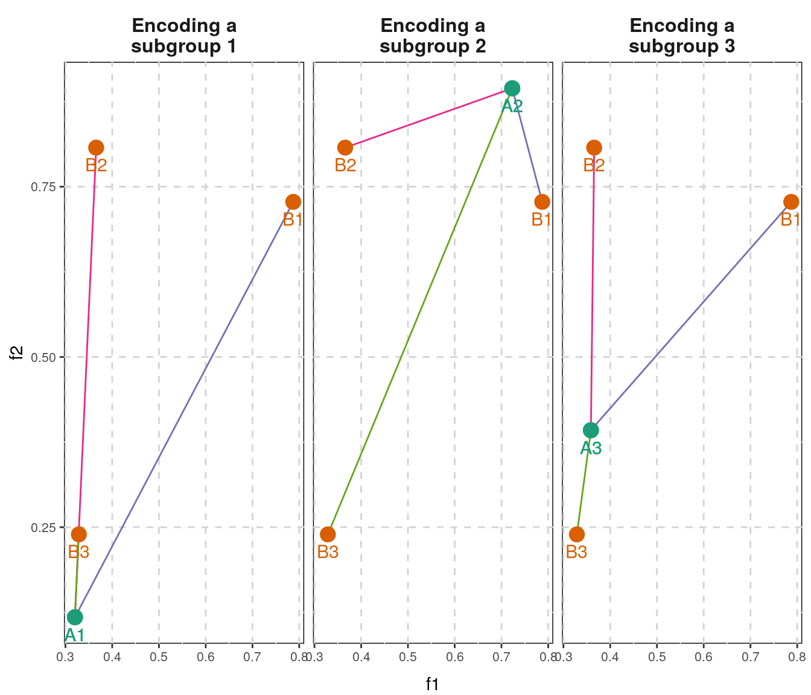

vignettes/overview.Rmd
overview.RmdSince the number of potential n-grams grows exponentially with the \(n\), n-gram datasets are often very large. To deal with the curse of dimensionality, the biogram package offers two solutions. The first relies on the reduction of an alphabet, which is a common approach in case of analysis of amino acid sequences (Murphy, Wallqvist, and Levy (2000)) and less applied in studies of nucleic acids.
The alternate solution is to filter the non-informative n-grams. The biogram package employs feature selection algorithm QuiPT, which allows very fast feature filtering.
In many cases the properties of the sequences are not depending on the exact sequence of the amino acids, but rather on their physicochemical properties. In this case, the full amino acid alphabet may be replaced with a shorter alphabet, where amino acids are aggregated to larger groups using some design criteria as physicochemical properties. The biogram package supports creation of reduced amino acid alphabets and their analysis by two distance measures: similarity index and encoding distance.
The similarity index, as computed by the calc_si function, was firstly introduced as the unnamed distance measure for reduced alphabets by Stephenson and Freeland (2013). Briefly, if a pair of elements is in both encodings in the same group or in different groups, the pair scores 1 and in the opposite case 0. The pairs of the identical elements are ignored. The score is later divided by the number of possible pairs (\(20 \times 19\) in case of the amino acid alphabet).
\(A\): an alphabet.
\(a_1\): an element in the reduced alphabet 1.
\(a_2\): an element in the reduced alphabet 2.
\[ S = \sum_{a_1 \in A} \sum_{a_2 \in A, a_2 \neq a_1 } \sum_{enc_1 \in encodings_1} \sum_{enc_2 \in encodings_2} 1_{a_1 \in enc_1 \land a_2 \in enc_2} \]
\[ I_S = \frac{S}{ |A|^2 - |A| } \]
The encoding distance, as computed per the calc_ed function, is defined as the minimum number of amino acids that have to be moved between subgroups of encoding to make a identical to b (the order of subgroups in the encoding and amino acids in a group is unimportant).
This measure may be further normalized by a factor reflecting how much moving amino acids between groups altered mean group properties. Such behavior if generated by specifying parameter prop.
| ID | Groups |
|---|---|
| 1 | P |
| 2 | F, I, W, Y |
| 3 | A, C, D, E, G, H, K, L, M, N, Q, R, S, T, V |
| ID | Groups |
|---|---|
| 1 | F, R, W, Y |
| 2 | C, I, L, T, V |
| 3 | A, D, E, G, H, K, M, N, P, Q, S |
The encoding distance between both groups is 7.

The figure above represents the distances between groups of encoding a (green dots) and groups of encoding b (red dots). The position of the dot defined by mean values of specific properties of all amino acids belonging to the group.
| Enc a, group 1 | Enc a, group 2 | Enc a, group 3 | |
|---|---|---|---|
| Enc b, group 1 | 0.7681436 | 0.1786769 | 0.5441119 |
| Enc b, group 2 | 0.6910472 | 0.3677947 | 0.4150182 |
| Enc b, group 3 | 0.1219397 | 0.7645517 | 0.1558620 |
The scale factor \(s\) for the encoding distance between the encoding a with \(n\) subgroups (enumerated with \(i\)) and the encoding b with \(m\) subgroups (enumerated with \(j\)), we first calculated \(p_i\) and \(q_j\), i.e. the mean values of corresponding physicochemical properties of all amino acids for each subgroup.
\[ s_{ab} = \sum^n_{i = 1} \left( \min_{j=1,\dots,m} \; \; \sum^L_{l=1} \sqrt{ (p_{i,l} - q_{j,l})^2} \right) \]
In the case depicted above, \(s_{ab}\) is equal to the sum of 0.1219, 0.1787, 0.1559: 0.4565.
The encoding distance is computed with the calc_ed function.
# define two encodings
a <- list(`1` = "p",
`2` = c("f", "i", "w", "y"),
`3` = c("a", "c", "d", "e", "g", "h", "k", "l", "m", "n", "q", "r", "s", "t", "v"))
b <- list(`1` = c("f", "r", "w", "y"),
`2` = c("c", "i", "l", "t", "v"),
`3` = c("a", "d", "e", "g", "h", "k", "m", "n", "p", "q", "s"))
# calculate encoding distance
calc_ed(a = a, b = b, measure = "pi")## [1] 7# get properties from aaprop dataset and calculate normalized encoding distance
data(aaprop)
calc_ed(a = a, b = b, measure = "pi", prop = aaprop[c(22, 211), ])## [1] 3.19535QuiPT is fast solution for filtering a large number of binary features provided that target vector is also binary. It is typical case for positioned n-gram data. Moreover, even considering unpositioned n-grams, if the \(n\) is sufficiently high, the matrix of counts is almost sparse and little to no information is lost after data is artificially binarized.
The simplest use case of QuiPT is a case of two Bernoulli random variables. One of them is feature, the other is target. We are interested in deciding whether feature brings some important information about target. The biogram package employs several measures of such a dependence (see ?calc_criterion). We shall consider in detail only information gain, but similar conclusions can be done for other measures.
For a discrete random variable we define entropy by: \[ H(X) = - \sum^m p_j log p_j\] For a Bernoulli r.v. we get a simplified expression \[ H(X) = -p \cdot log(p) - (1-p) \cdot log(1-p)\]
For two discrete r.v. X, Y we define average conditional entropy by: \[H(Y|X) = \sum_j P(X=v_j) H(Y|X=v_j)\] If X and Y are Bernoulli’s then: \[H(Y|X) = q \cdot H(Y|X=1) + (1-q) \cdot H(Y|X=0)\]
\[IG(Y|X) = H(Y) - H(Y|X)\]
The intuition is that: > IG tells you how interesting a 2-d contingency table is going to be
In our application, analysis of n-grams, we are interested in Bernoulli r.v. Let us consider the contingency table we get:
| target\feature | 1 | 0 |
|---|---|---|
| 1 | \(n_{1,1}\) | \(n_{1,0}\) |
| 0 | \(n_{0,1}\) | \(n_{0,0}\) |
As can be seen above we have 4 possible outcomes. If probability that target equals 1 is \(p\) and probability that feature equals 1 is \(q\) and feature and target are independent then each of them has the following probabilities \[P((Target, Feature) = (1,1)) = p \cdot q\] \[P((Target, Feature) = (1,0)) = p \cdot (1-q)\] \[P((Target, Feature) = (0,1)) = (1-p) \cdot q\] \[P((Target, Feature) = (0,0)) = (1-p) \cdot (1-q)\]
This means that a target-feature can be described as multinomial distribution:
\[ \begin{aligned} {n \choose n_{1,1}} (p\cdot q)^{n_{1,1}} {n - n_{1,1} \choose n_{1,0}} (p\cdot (1-q))^{n_{1,0}} {n - n_{1,1} - n_{1,0} \choose n_{0,1}} ((1-p)\cdot q)^{n_{0,1}} \\ {n - n_{1,1} - n_{1,0} -n_{0,1}\choose n_{0,0}} ((1-p)\cdot (1-q))^{n_{0,0}} \end{aligned} \]
However we have important restriction that \(n_{1,\cdot} = n_{1,1} + n_{1,0}\) and \(n_{\cdot, 1} = n_{1,1} + n_{0,1}\) are known and fixed as they describe the number of “ones” for target and feature respectively.
This might look very complicated but this restriction in fact simplifies our computation significantly.
Observe that \(n_{1,1}\) is from range \([0,min(n_{\cdot, 1}, n_{1, \cdot})]\). So we get probability of certain contingency table as conditional distribution, as impose restrictions on two parameters \(n_{\cdot, 1}\) and \(n_{1, \cdot}\) We can compute IG for each possible value of \(n_{1,1}\) and finally we get distribution of Information Gain under hypothesis that target and feature are independent.
The calculation of distributions is performed by distr_crit function. To facilitate time-consuming computations when dealing with a very large number of features, we introduce a possibility to set the limit of calculated contingence matrices using iter_limit parameter. By default, IG is calculated for 200 contingence matrices, therefore we get an approximate distribution of Information Gain.
Having exact or even approximate (when limiting the number of calculated contingence matrices) distribution lets us perform permutation test much quicker as we no longer need to perform any replications. Furthermore, by using exact test we will get precise values of tails which was not guaranteed with random permutations.
Murphy, Lynne Reed, Anders Wallqvist, and Ronald M. Levy. 2000. “Simplified Amino Acid Alphabets for Protein Fold Recognition and Implications for Folding.” Protein Engineering 13 (3): 149–52. https://doi.org/10.1093/protein/13.3.149.
Stephenson, James D., and Stephen J. Freeland. 2013. “Unearthing the Root of Amino Acid Similarity.” Journal of Molecular Evolution 77 (4): 159–69. https://doi.org/10.1007/s00239-013-9565-0.